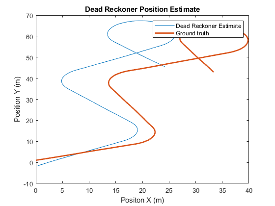
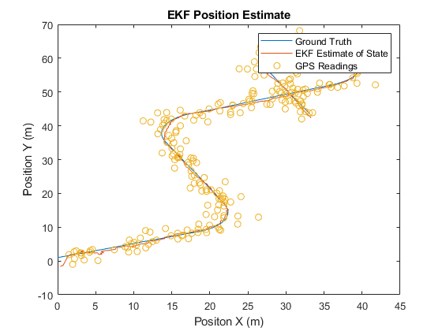

clc
clear
load("calibration.mat")
load("kfData.mat")
T = 0.01;
for i = 1:length(q_groundtruth) - 1
F_lin(:, :, i) = [1, 0, -T * (u(1, i)) * sin(q_groundtruth(3, i));
0, 1, T * (u(1, i)) * cos(q_groundtruth(3, i));
0, 0, 1];
G_lin(:, :, i) = [T * cos(q_groundtruth(3, i)), 0;
T * sin(q_groundtruth(3, i)), 0;
0 , T];
tau_lin(:, :, i) = [T * cos(q_groundtruth(3, i)), 0;
T * sin(q_groundtruth(3, i)), 0;
0 , T];
process_noise(i, :) = tau_lin(:, :, i) \ ( q_groundtruth(:, i + 1) - F_lin(:, :, i) * q_groundtruth(:, i) - G_lin(:, :, i) * u(:, i) );
end
covV = cov(process_noise);
disp("Process Covariance (V):")
disp(covV)
for i = 1:length(t_y)
j = find(t_groundTruth == t_y(i));
q_relevant(1:2, j) = q_groundtruth(1:2, j);
end
a = q_relevant(1, q_relevant(1, :) ~= 0);
b = q_relevant(2, q_relevant(2, :) ~= 0);
q_relevant = [a;b];
covW = cov(transpose(y - q_relevant));
disp("Sensor Covariance (W):")
disp(covW)
w = mvnrnd([0, 0], covW, length(t));
v = mvnrnd([0, 0], covV, length(t));
qhat_i = [0.355; -1.590; 0.682];
q_dr(:, 1) = qhat_i;
for i = 1:length(t) - 1
q_dr(1, i + 1) = q_dr(1, i) + T * (u(1, i) + v(i, 1)) * cos(q_dr(3, i));
q_dr(2, i + 1) = q_dr(2, i) + T * (u(1, i) + v(i, 1)) * sin(q_dr(3, i));
q_dr(3, i + 1) = q_dr(3, i) + T * (u(2, i) + v(i, 2));
end
figure(1)
plot(q_dr(1, :), q_dr(2, :))
hold on
plot(q_groundtruth(1, :), q_groundtruth(2, :), LineWidth=2)
hold off
xlabel("Positon X (m)")
ylabel("Position Y (m)")
legend('Dead Reckoner Estimate', "Ground truth")
title("Dead Reckoner Position Estimate")
P = [25, 0, 0;
0, 25, 0;
0, 0, 0.154];
H = [1, 0, 0;
0, 1, 0];
q_ekf(:, 1) = qhat_i;
for i = 1:length(t) - 1
q_ekf(1, i + 1) = q_ekf(1, i) + T * (u(1, i) + v(i, 1)) * cos(q_ekf(3, i));
q_ekf(2, i + 1) = q_ekf(2, i) + T * (u(1, i) + v(i, 1)) * sin(q_ekf(3, i));
q_ekf(3, i + 1) = q_ekf(3, i) + T * (u(2, i) + v(i, 2));
P = F_lin(:, :, i) * P * transpose(F_lin(:, :, i)) + tau_lin(:, :, i) * covV * transpose(tau_lin(:, :, i));
if ismember(t(i), t_y)
GPS = y(:, i/10);
S = H * P * transpose(H) + covW;
q_ekf(:, i + 1) = q_ekf(:, i + 1) + P * transpose(H) * inv(S) * (GPS - H * q_ekf(:, i + 1));
P = P - P * transpose(H) * inv(S) * H * P;
end
end
figure(2)
plot(q_groundtruth(1, :), q_groundtruth(2, :))
hold on
plot(q_ekf(1, :), q_ekf(2, :))
hold on
scatter(y(1, :), y(2, :))
hold off
legend(["Ground Truth", "EKF Estimate of State", "GPS Readings"])
xlabel("Positon X (m)")
ylabel("Position Y (m)")
title("EKF Position Estimate")
Process Covariance (V):
0.2591 0.0010
0.0010 0.0625
Sensor Covariance (W):
1.8817 0.0632
0.0632 2.1384
 